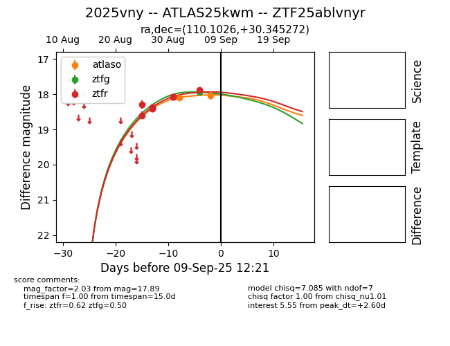

FINK: ZTF25ablvnyr
Lasair: ZTF25ablvnyr
ALeRCE: ZTF25ablvnyr
TNS: 2025vny
YSE: 2025vny
ZTF25ablvnyr (ztf,fink)
2025vny (tns,yse)
ATLAS25kwm (atlas)
equatorial (ra, dec) = (110.1026,+30.34527)
galactic (l, b) = (187.8876,+19.09912)

last atlaso=18.10, ztfg=17.94, ztfr=17.89
1 atlaso, 1 ztfg, 9 ztfr detections